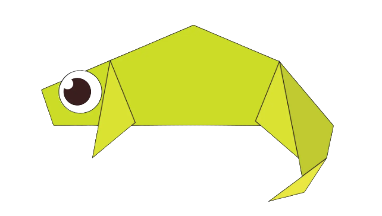

Origami Instructions and Diagrams
Step by Step diagrams are probably the most popular and easiest to follow way to
show how to fold things out of paper.
Trying to find good origami instructions on the Internet can be a lot of work through. To
help your search we've put
together the largest database of free origami
anywhere on the Internet.
New to Origami? Click here

chameleon
Click here to see how to make a origami chameleon here
Intersesting Facts About Chemeleon
- Chameleons are reptiles that are part of the IGUANA SUBORDER
- Changing skin color is an important part of the communication among chameleons
- Most chameleons have a prehensile tail that they use to wrap around the tree branches
Pigeon
Click here to see how to make a origami pigeon here
Intersesting Facts About Pigeon
- Pigeons are incredibly complex and intelligent animals
- Pigeons are renowned for their outstanding navigational abilities
- Pigeons have excellent hearing abilities.

Panda
Click here to see how to make a origami panda here
Intersesting Facts About Pandas
- In the past, pandas were thought to be rare and noble creatures
- It is characterised by large, black patches around its eyes, over the ears, and across its round body
- Giant pandas grow to between 1.2m and 1.5m, and weigh between 75kg and 135kg.

Camel
Click here to see how to make a origami camel here
Intersesting Facts About Camel
- Camels have three sets of eyelids and two rows of eyelashes to keep sand out of their eyes
- Camels can completely shut their nostrils during sandstorms
- Camels have thick lips which let them forage for thorny plants other animals can’t eat.

Cicada
Click here to see how to make a origami cicada here
Intersesting Facts About Cicada
- The cicadas are a superfamily, the Cicadoidea, of insects in the order Hemiptera (true bugs)
- Cicadas are medium to large in size, ranging from 2 to 5 cm (0.8 to 2 inches)
- Cicadas have prominent compound eyes set wide apart on the sides of the head.

Bulldog
Click here to see how to make a origami bulldog here
Intersesting Facts About bulldog
- The Bulldog, also known as the English Bulldog or British Bulldog, is a medium-sized dog breed
- It is a muscular, hefty dog with a wrinkled face and a distinctive pushed-in nose
- Bulldogs are popular pets; they were the fifth most popular purebreed in the US in 2017 according to the American Kennel Club.

Caterpillar
Click here to see how to make a origami caterpillar here
Intersesting Facts About caterpillar
- Caterpillars are the larval stage of members of the order Lepidoptera
- Caterpillars have soft bodies that can grow rapidly between moults
- Their size varies between species and instars from as small as 1 millimetre (0.039 inches) up to 14 centimetres (5.5 inches).

Rabbit
Click here to see how to make a origami rabbit here
Intersesting Facts About rabbit
- They can't live off carrots. Cartoons suggest that rabbits can happily survive on a diet of carrots alone
- Some rabbits are as big as a toddler.. Not all rabbits are cute and tiny
- There's some truth to the phrase "breed like rabbits.". Rabbits really are a busy bunch.
Parrot
Click here to see how to make a origami parrot here
Intersesting Facts About parrot
- Parrots have a heavy, in relation to their size, and compact body with a large head and a short neck
- Their beaks are short, strong and curved
- The two parts of the beak are very strong and used to break fruits and seeds.
Ostrich
Click here to see how to make a origami ostrich here
Intersesting Facts About ostrich
- The ostrich (Struthio camelus) is a large flightless bird that lives in Africa
- They are the largest living bird species, and have the biggest eggs of all living birds
- Ostriches do not fly, but can run faster than any other bird.
Duck
Click here to see how to make a origami
duck here
Intersesting Facts About duck
- Duck is the common name for numerous species in the waterfowl family Anatidae which also includes swans and geese
- All types of ducks are part of the bird family Anatidae, which also includes swans and geese
- A baby duck is called a duckling, and an adult male is a drake.
Sparrow
Click here to see how to make a origami sparrow here
Intersesting Facts About Sparrow
- Sparrows are loosely monogamous
- These birds are aggressive and social, which increases their ability to compete with most native birds
- They can swim to escape from predators, although they are not considered to be water birds.
Squirrel
Click here to see how to make a origami squirrel here
Intersesting Facts About squirrel
- There are around 280 different species of squirrel
- Squirrels are born blind. Young squirrels, like many mammals, are completely helpless when they’re born
- Squirrels can find buried food beneath a foot of snow.
Flying-Squirrel
Click here to see how to make a origami flying-squirrel here
Intersesting Facts About flying-squirrel
- Flying squirrel he have physical form similar to squirrels
- There are approximately 50 different species of flying squirrels, but most of them have similar appearances
- They are darker on their backs, and commonly have brown or gray fur.
Bat
Click here to see how to make a origami bat here
Intersesting Facts About bat
- Bats are mammals of the order Chiroptera
- With their forelimbs adapted as wings, they are the only mammals capable of true and sustained flight
- Bats are more manoeuvrable than birds, flying with their very long spread-out digits covered with a thin membrane or patagium.
Cow
Click here to see how to make a origami cow here
Intersesting Facts About cow
- Cattle, or cows and bulls, are the most common type of large domesticated ungulates
- They are a prominent modern member of the subfamily Bovinae, are the most widespread species of the genus Bos, and are most commonly classified collectively as Bos taurus
- All “ cows ” are female. Males are called bulls or steer.
Lion
Click here to see how to make a origami lion here
Intersesting Facts About lion
- The lion (Panthera leo) is a species in the family Felidae
- It is a muscular, deep-chested cat with a short, rounded head, a reduced neck and round ears, and a hairy tuft at the end of its tail
- The lion has forever been a symbol of strength, power and ferocity.
Shark
Click here to see how to make a origami shark here
Intersesting Facts About shark
- Evidence for the existence of sharks dates from the Ordovician period, 450–420 million years ago, before land vertebrates existed and before a variety of plants had colonized the continents
- Sharks are found in deep and shallow waters throughout the world’s oceans
- The largest shark and the largest fish in the world is the whale shark (Rhincodon typus), which is believed to reach a maximum length of 65 feet.
Gold Fish
Click here to see how to make a origami gold-fish here
Intersesting Facts About gold-fish
- Not always gold. Goldfish weren’t always, well, gold
- Goldfish go from cute to villainous when released into the wild
- An adaptable, intelligent fish. Goldfish are a hardy aquatic species.
Gold Turtle
Click here to see how to make a origami Turtle here
Intersesting Facts About turtle
- Not always gold. Goldfish weren’t always, well, gold
- Goldfish go from cute to villainous when released into the wild
- An adaptable, intelligent fish. Goldfish are a hardy aquatic species.